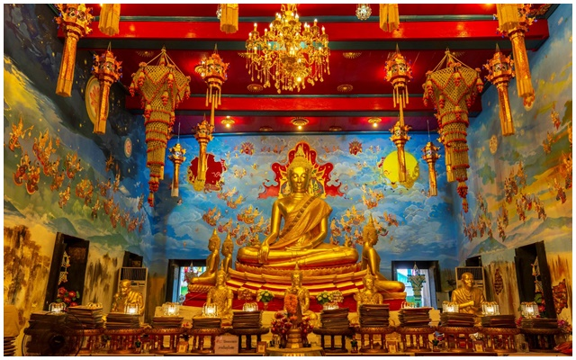

6.วัดท่าการ้อง
วัดท่าการ้อง ตั้งอยู่ที่บ้านท่า ตําบลสําเภาล่ม เป็นวัดเก่าแก่ตั้งแต่สมัยอยุธยา ติดริมแม่น้ำเจ้าพระยาทางทิศตะวันตกของเกาะเมืองพระนครศรีอยุธยา ในประวัติศาสตร์กล่าวว่า สร้างในสมัยสมเด็จพระไชยราชาธิราช สมัยอยุธยาตอนต้น ก่อนเหตุการณ์เสียกรุง บริเวณนี้เคยเป็นที่ตั้งค่ายของแม่ทัพใหญ่ของเนเมียวสีหบดี ปัจจุบันยังคงเหลือสถาปัตยกรรมสมัยกรุงศรีอยุธยา ได้แก่ ศาลาการเปรียญไม้สักริมแม่น้ำเจ้าพระยา พระอุโบสถประดิษฐานพระพุทธรัตนมงคล หรือหลวงพ่อยิ้ม ต่อมาในยุคปัจจุบัน เมื่อสงครามโลกครั้งที่ 2 วัดท่าการ้อง ถูกดัดแปลงเป็นโรงเรียนนายร้อยฝ่ายช่างเทคนิค โดยใช้ศาลาการเปรียญเป็นห้องเรียน อุโบสถก่ออิฐถือปูนสภาพค่อนข้างสมบูรณ์ หน้าบันเป็นไมจําหลักสวยงาม ซุ้มประตูและหน้าต่างประดับลายปูนปั้น ด้านหน้าอุโบสถประดับด้วยกระจกสี ภายนอกมีกําแพงแก้วล้อมรอบพระอุโบสถ พื้นที่บริเวณวัดมีการตกแต่งอย่างสวยงามด้วยไม้ดอกและไม้ประดับ หลากหลายชนิด อีกทั้งมีห้องน้ำที่สะอาดและสวยงามจนได้รับรางวัลชนะเลิศ การประกวดสุดยอดส้วมแห่งปี ระดับประเทศ ปี พ.ศ. 2549 ประเภทวัด และศาสนสถาน